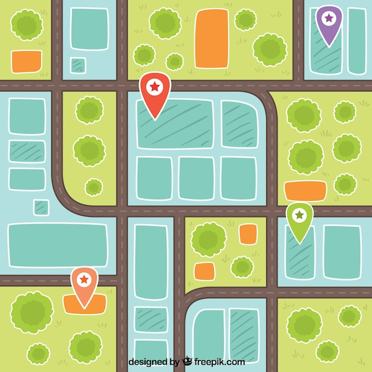

Amsterdam  Olivia Overtoom 450 1054 JX Amsterdam Route Karel Kinkerstraat 272 1053 DC Amsterdam Route
Rotterdam Wafa West-kruiskade 93 3014 AN Rotterdam Route Wicher Witte de Withstraat 32 3012 BP Rotterdam Route